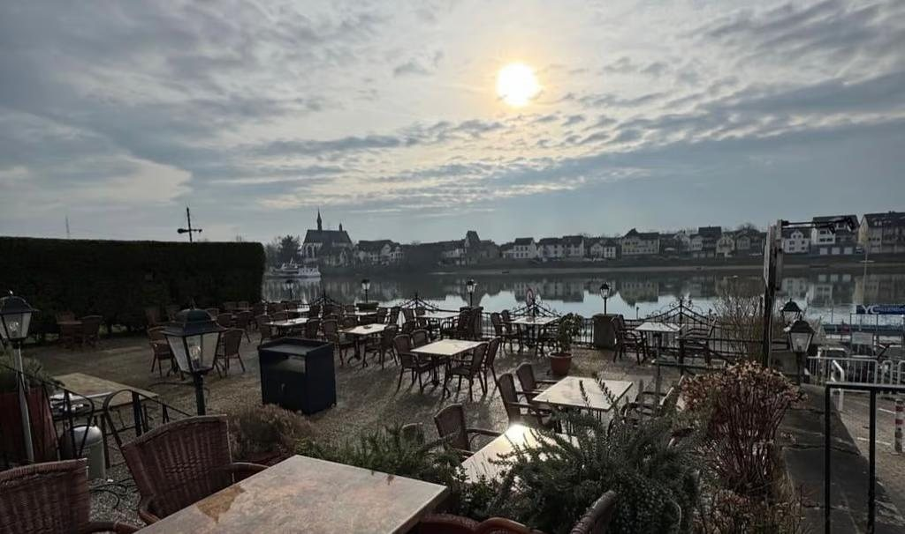
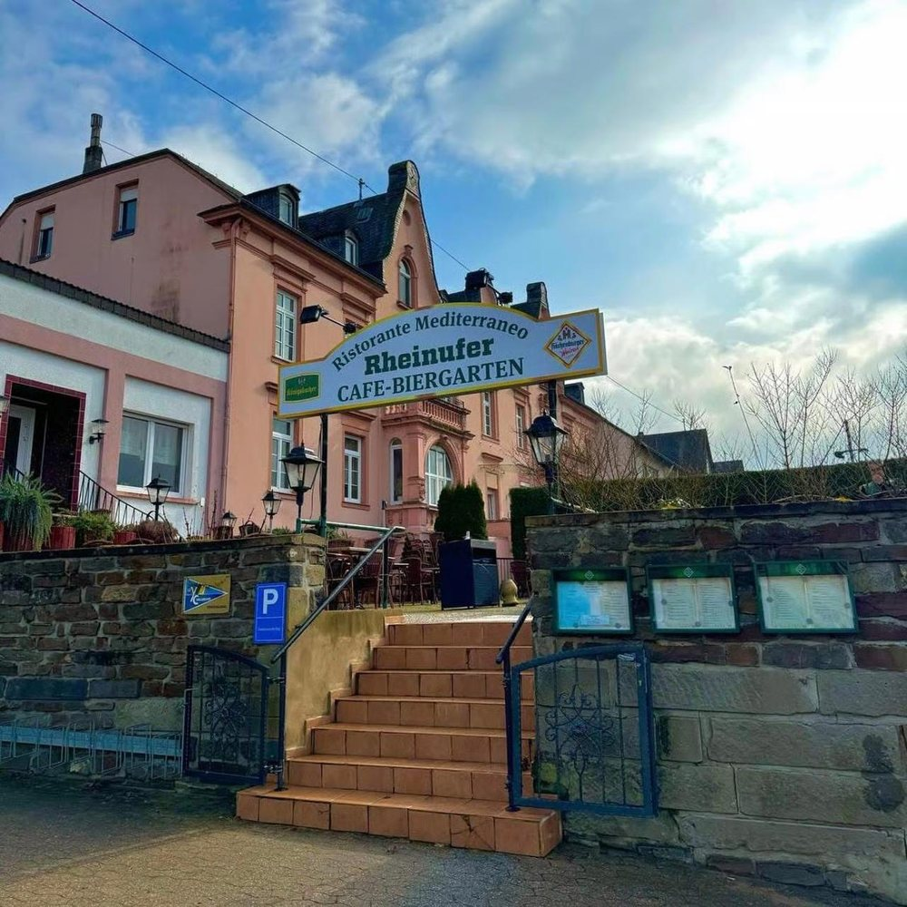

Zum Anfang
Antipasti
- Prickelnder Aperitif zum Ankommen
- Carpaccio vom Rinderfilet mit Parmesan
- Insalata Rucola im Balsamico-Dressing
- Warme Vorspeisen und mediterrane Suppen
Ristorante · Rheinufer Vallendar
Direkt am wunderschönen Rheinufer erwartet Sie ein Stück Italien — authentisch, herzlich und voller Genuss.

Benvenuti
In unserem Ristorante Riva Sei verbinden wir traditionelle italienische Küche mit frischen, regionalen Zutaten und der unverwechselbaren Leichtigkeit des Südens.
Ob ein prickelnder Aperitif zum Start, traditionelle Pasta, knusprige Pizza wie in Italien oder erlesene Fisch- und Fleischspezialitäten — bei uns finden Sie italienische Köstlichkeiten für jeden Geschmack. Unsere sorgfältig ausgewählten Weine runden das Erlebnis perfekt ab.
Genießen Sie die besondere Atmosphäre unseres Hauses: gemütlich im stilvollen Innenbereich oder entspannt mit Blick auf den Rhein — wie ein kleiner Urlaub in Italien, mitten in Vallendar.
Wir freuen uns darauf, Sie bei uns willkommen zu heißen — für ein Abendessen zu zweit, ein Familienfest oder einfach eine genussvolle Auszeit vom Alltag.
Benvenuti & buon appetito!
Unsere Geschichte

Das Riva Sei ist mehr als nur ein Restaurant — es ist ein Stück italienische Lebensfreude am Rheinufer in Vallendar.
Unser Küchenchef ist ein waschechter Italiener und bringt über 30 Jahre Erfahrung aus der traditionellen Gastronomie mit. Mit Leidenschaft, Herz und einem feinen Gespür für authentische Rezepte zaubert er Gerichte, die den Geschmack Italiens auf Ihren Teller bringen.
Dabei setzen wir nicht nur auf Qualität und Tradition, sondern auch auf ein echtes Familiengefühl: Das Ristorante Riva Sei ist ein familiengeführtes Unternehmen, in dem Gastfreundschaft großgeschrieben wird. Jeder Gast soll sich bei uns fühlen wie bei Freunden — willkommen, umsorgt und rundum wohl.
So entstand ein Ort, an dem kulinarischer Genuss, Herzlichkeit und mediterranes Flair zusammenkommen — seit vielen Jahren und hoffentlich noch für viele mehr.
Die Karte
Ein Auszug aus der Küche. Die vollständige Speisekarte mit allen Gerichten und Preisen wechselt saisonal — wir legen sie Ihnen gerne am Tisch vor.
Zum Anfang
Handwerk
Aus dem Ofen
Land & Meer
„Endlich wieder ein italienisches Restaurant mit traditionell hergestellten Spaghetti Carbonara. Keine Sahnesauce mit Kochschinken, sondern Ei, Parmesan und Pecorino mit Guanciale!“Richard Bauer · Google-Rezension
Vollständige Speisekarte und aktuelle Preise unter riva-sei.de/speisekarte oder telefonisch unter 0261 63180.
Stimmen
Ich gehe hier öfter essen und bin jedes Mal zufrieden. Das Restaurant ist gemütlich, man fühlt sich willkommen und alles läuft entspannt ab.
Das Essen ist konstant gut. Pizza immer knusprig, Pasta frisch und geschmacklich sehr gut. Auch die Vorspeisen passen. Man merkt, dass hier Wert auf Qualität gelegt wird.
Der Service ist freundlich und aufmerksam, ohne aufdringlich zu sein. Wartezeiten sind kurz. Preis-Leistung stimmt für mich. Komme immer wieder gerne her und kann es weiterempfehlen.
Eigentlich wären hier 6 Sterne angebracht!
Kiril Martens Local Guide · 16 Rezensionen vor 6 Monaten
Sehr schönes Ambiente, direkt am Rheinarm Vallendar — Insel Niederwerth, mit direktem Blick auf den Rhein. Große Terrasse mit alten Olivenbäumen und Plattenbelägen, gute Sitzgelegenheiten und Tische. Der Service ist freundlich.
DESPERADO Local Guide · 29 Rezensionen vor einem Monat
Wir waren schon öfter dort essen und waren immer wieder vom Service, Ambiente und Essen begeistert. Immer wieder gerne!
Das Ambiente und die Chillout-Musik laden zum Entspannen und Verbringen eines gemütlichen Abends bei Sonnenuntergang ein.
Rüdiger Bornemann 3 Rezensionen vor einem Monat
Super leckeres Essen und sehr nettes Personal, draußen sitzt man gemütlich am Rhein entlang. Idyllisch, und wir haben uns sehr wohl gefühlt! Vielen Dank und weiter so.
K. Local Guide · 70 Rezensionen vor 2 Monaten
Endlich wieder ein italienisches Restaurant mit traditionell hergestellten Spaghetti Carbonara. Keine Sahnesauce mit Kochschinken, sondern Ei, Parmesan und Pecorino mit Guanciale! Super lecker und toll zubereitet. Vielen Dank!
Richard Bauer Local Guide · 72 Rezensionen vor 2 Monaten
Neuer Name und komplett neu gestaltete Terrasse. Sehr gute Auswahl an Speisen und Getränken. Schmackhafte Gerichte.
J. Hachenthal Local Guide · 177 Rezensionen vor 3 Monaten
Besuch
Für einen Platz auf der Terrasse empfehlen wir eine kurze telefonische Reservierung — besonders an schönen Abenden.
| Montag | 11:30 – 14:30 · 17:00 – 22:00 |
|---|---|
| Dienstag | 11:30 – 14:30 · 17:00 – 22:00 |
| Mittwoch | Ruhetag |
| Donnerstag | 11:30 – 14:30 · 17:00 – 22:00 |
| Freitag | 11:30 – 14:30 · 17:00 – 22:00 |
| Samstag | 11:30 – 14:30 · 17:00 – 22:00 |
| Sonntag | 11:30 – 14:30 · 17:00 – 22:00 |
Adresse
Ristorante Riva SeiReservierung
Im Netz